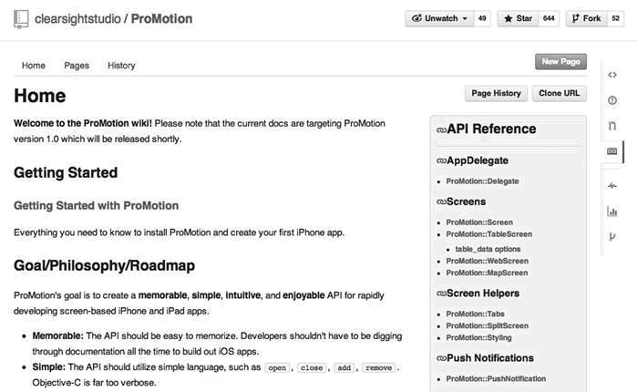
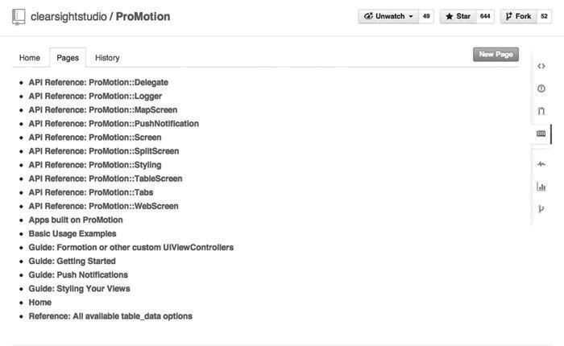
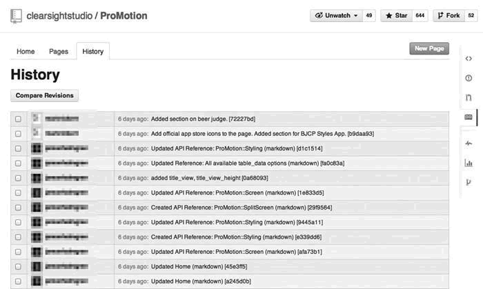
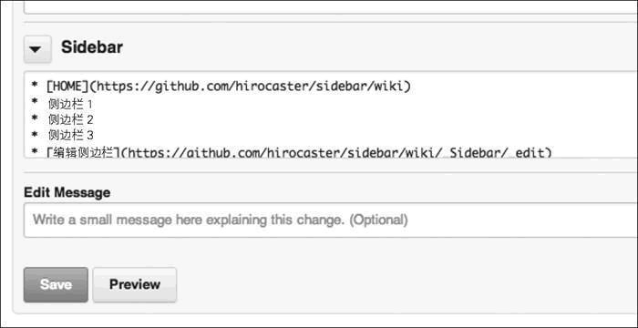

首页 > 编程笔记
GitHub Wiki功能简介
Wiki 是一个使用简单的语法就能编写文档的功能（图 1）。所有有权限的人都可以对文章进行修改，所以比较适合多人共同编写文章的情况。创建、编辑文档时不必另外启动软件，用起来十分方便，非常适合用来针对更新频率较高的软件进行文档等信息方面的汇总。
与 Issue 和 Pull Request 相同，Wiki 也支持 GFM 语法，所以可以轻松创建表现力丰富的文档。点击页面右上角的 New Page 按钮便可以创建新的 Wiki 页。
Wiki 功能本身的数据也在 Git 中进行管理。点击 Clone URL 按钮可以将当前 Wiki 的 Git 仓库 URL 复制到剪贴板中。用户能够通过 clone 操作获取 Wiki 仓库，然后在本地创建、编辑页面，进行提交再 push，便可以完成对 Wiki 的创建及编辑工作。
在 Pages 标签页中可以列表查看 Wiki 页面（图 2）。
在 History 标签页中可以查看 Wiki 的修改历史记录（图 3）。
由于 Wiki 功能也有历史记录可查，所以软件开发者可以放心地投入到工作中去。将 Wiki 仓库 clone 到本地，就可以不借助浏览器，直接用自己熟悉的编辑器进行编辑，十分人性化。
一般情况下，Wiki 中记载着软件相关的 FAQ、文档、代码示例及解说等信息。各位在使用 GitHub 上开发的软件前，建议先查看一遍 Wiki。
在编辑各页面时页面下部会附加 Sidebar 段（图 4），用户可以在这里编辑侧边栏的内容。

图 1 Wiki 的应用实例
图 1 Wiki 的应用实例
与 Issue 和 Pull Request 相同，Wiki 也支持 GFM 语法，所以可以轻松创建表现力丰富的文档。点击页面右上角的 New Page 按钮便可以创建新的 Wiki 页。
Wiki 功能本身的数据也在 Git 中进行管理。点击 Clone URL 按钮可以将当前 Wiki 的 Git 仓库 URL 复制到剪贴板中。用户能够通过 clone 操作获取 Wiki 仓库，然后在本地创建、编辑页面，进行提交再 push，便可以完成对 Wiki 的创建及编辑工作。
在 Pages 标签页中可以列表查看 Wiki 页面（图 2）。

图 2 Wiki 页面一览
图 2 Wiki 页面一览
在 History 标签页中可以查看 Wiki 的修改历史记录（图 3）。

图 3 Wiki 历史记录一览
图 3 Wiki 历史记录一览
由于 Wiki 功能也有历史记录可查，所以软件开发者可以放心地投入到工作中去。将 Wiki 仓库 clone 到本地，就可以不借助浏览器，直接用自己熟悉的编辑器进行编辑，十分人性化。
一般情况下，Wiki 中记载着软件相关的 FAQ、文档、代码示例及解说等信息。各位在使用 GitHub 上开发的软件前，建议先查看一遍 Wiki。
在 Wiki 中显示侧边栏
所有 Wiki 页面都可以显示侧边栏。做法很简单，只要创建名为“_sidebar”的页面即可。_sidebar 页不会显示在 Pages 的页面一览中。在编辑各页面时页面下部会附加 Sidebar 段（图 4），用户可以在这里编辑侧边栏的内容。

图 4 编辑侧边栏的内容
图 4 编辑侧边栏的内容
关注公众号「站长严长生」，在手机上阅读所有教程，随时随地都能学习。内含一款搜索神器，免费下载全网书籍和视频。

微信扫码关注公众号